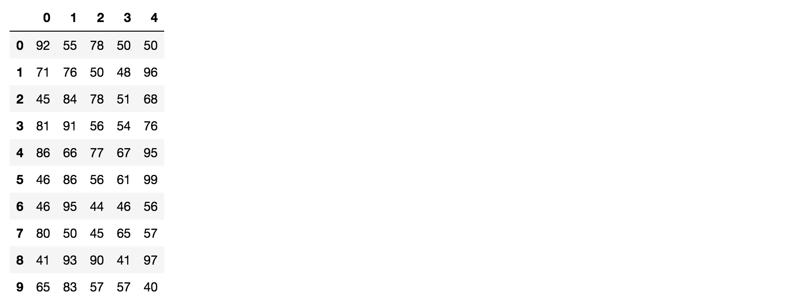

5.2 Pandas数据结构
学习目标
- 目标
- 知道Pandas的Series结构
- 掌握Pandas的Dataframe结构
- 了解Pandas的MultiIndex与panel结构
Pandas中一共有三种数据结构，分别为：Series、DataFrame和MultiIndex（老版本中叫Panel ）。
其中Series是一维数据结构，DataFrame是二维的表格型数据结构，MultiIndex是三维的数据结构。
1.Series
Series是一个类似于一维数组的数据结构，它能够保存任何类型的数据，比如整数、字符串、浮点数等，主要由一组数据和与之相关的索引两部分构成。
1.1 Series的创建
# 导入pandas
import pandas as pd
pd.Series(data=None, index=None, dtype=None)
- 参数：
- data：传入的数据，可以是ndarray、list等
- index：索引，必须是唯一的，且与数据的长度相等。如果没有传入索引参数，则默认会自动创建一个从0-N的整数索引。
- dtype：数据的类型
通过已有数据创建
- 指定内容，默认索引
pd.Series(np.arange(10))
# 运行结果
0 0
1 1
2 2
3 3
4 4
5 5
6 6
7 7
8 8
9 9
dtype: int64
- 指定索引
pd.Series([6.7,5.6,3,10,2], index=[1,2,3,4,5])
# 运行结果
1 6.7
2 5.6
3 3.0
4 10.0
5 2.0
dtype: float64
- 通过字典数据创建
color_count = pd.Series({'red':100, 'blue':200, 'green': 500, 'yellow':1000})
color_count
# 运行结果
blue 200
green 500
red 100
yellow 1000
dtype: int64
1.2 Series的属性
为了更方便地操作Series对象中的索引和数据，Series中提供了两个属性index和values
- index
color_count.index
# 结果
Index(['blue', 'green', 'red', 'yellow'], dtype='object')
- values
color_count.values
# 结果
array([ 200, 500, 100, 1000])
也可以使用索引来获取数据：
color_count[2]
# 结果
100
2.DataFrame
DataFrame是一个类似于二维数组或表格(如excel)的对象，既有行索引，又有列索引
- 行索引，表明不同行，横向索引，叫index，0轴，axis=0
- 列索引，表名不同列，纵向索引，叫columns，1轴，axis=1
2.1 DataFrame的创建
# 导入pandas
import pandas as pd
pd.DataFrame(data=None, index=None, columns=None)
参数：
- index：行标签。如果没有传入索引参数，则默认会自动创建一个从0-N的整数索引。
- columns：列标签。如果没有传入索引参数，则默认会自动创建一个从0-N的整数索引。
通过已有数据创建
举例一：
pd.DataFrame(np.random.randn(2,3))

回忆咱们在前面直接使用np创建的数组显示方式，比较两者的区别。
举例二：创建学生成绩表
# 生成10名同学，5门功课的数据
score = np.random.randint(40, 100, (10, 5))
# 结果
array([[92, 55, 78, 50, 50],
[71, 76, 50, 48, 96],
[45, 84, 78, 51, 68],
[81, 91, 56, 54, 76],
[86, 66, 77, 67, 95],
[46, 86, 56, 61, 99],
[46, 95, 44, 46, 56],
[80, 50, 45, 65, 57],
[41, 93, 90, 41, 97],
[65, 83, 57, 57, 40]])
但是这样的数据形式很难看到存储的是什么的样的数据，可读性比较差！！
问题：如何让数据更有意义的显示？
# 使用Pandas中的数据结构
score_df = pd.DataFrame(score)

给分数数据增加行列索引,显示效果更佳
效果：

- 增加行、列索引
# 构造行索引序列
subjects = ["语文", "数学", "英语", "政治", "体育"]
# 构造列索引序列
stu = ['同学' + str(i) for i in range(score_df.shape[0])]
# 添加行索引
data = pd.DataFrame(score, columns=subjects, index=stu)
2.2 DataFrame的属性
- shape
data.shape
# 结果
(10, 5)
- index
DataFrame的行索引列表
data.index
# 结果
Index(['同学0', '同学1', '同学2', '同学3', '同学4', '同学5', '同学6', '同学7', '同学8', '同学9'], dtype='object')
- columns
DataFrame的列索引列表
data.columns
# 结果
Index(['语文', '数学', '英语', '政治', '体育'], dtype='object')
- values
直接获取其中array的值
data.values
array([[92, 55, 78, 50, 50],
[71, 76, 50, 48, 96],
[45, 84, 78, 51, 68],
[81, 91, 56, 54, 76],
[86, 66, 77, 67, 95],
[46, 86, 56, 61, 99],
[46, 95, 44, 46, 56],
[80, 50, 45, 65, 57],
[41, 93, 90, 41, 97],
[65, 83, 57, 57, 40]])
- T
转置
data.T
结果

- head(5)：显示前5行内容
如果不补充参数，默认5行。填入参数N则显示前N行
data.head(5)

- tail(5):显示后5行内容
如果不补充参数，默认5行。填入参数N则显示后N行
data.tail(5)
2.3 DatatFrame索引的设置
需求：

2.3.1 修改行列索引值
stu = ["学生_" + str(i) for i in range(score_df.shape[0])]
# 必须整体全部修改
data.index = stu
注意：以下修改方式是错误的
# 错误修改方式
data.index[3] = '学生_3'
2.3.2 重设索引
- reset_index(drop=False)
- 设置新的下标索引
- drop:默认为False，不删除原来索引，如果为True,删除原来的索引值
# 重置索引,drop=False
data.reset_index()

# 重置索引,drop=True
data.reset_index(drop=True)
2.3.3 以某列值设置为新的索引
- set_index(keys, drop=True)
- keys : 列索引名成或者列索引名称的列表
- drop : boolean, default True.当做新的索引，删除原来的列
设置新索引案例
1、创建
df = pd.DataFrame({'month': [1, 4, 7, 10],
'year': [2012, 2014, 2013, 2014],
'sale':[55, 40, 84, 31]})
month sale year
0 1 55 2012
1 4 40 2014
2 7 84 2013
3 10 31 2014
2、以月份设置新的索引
df.set_index('month')
sale year
month
1 55 2012
4 40 2014
7 84 2013
10 31 2014
3、设置多个索引，以年和月份
df = df.set_index(['year', 'month'])
df
sale
year month
2012 1 55
2014 4 40
2013 7 84
2014 10 31
注：通过刚才的设置，这样DataFrame就变成了一个具有MultiIndex的DataFrame。
3.MultiIndex与Panel
3.1 MultiIndex
MultiIndex是三维的数据结构;
多级索引（也称层次化索引）是pandas的重要功能，可以在Series、DataFrame对象上拥有2个以及2个以上的索引。
3.1.1 multiIndex的特性
打印刚才的df的行索引结果
df.index
MultiIndex(levels=[[2012, 2013, 2014], [1, 4, 7, 10]],
labels=[[0, 2, 1, 2], [0, 1, 2, 3]],
names=['year', 'month'])
多级或分层索引对象。
- index属性
- names:levels的名称
- levels：每个level的元组值
df.index.names
# FrozenList(['year', 'month'])
df.index.levels
# FrozenList([[1, 2], [1, 4, 7, 10]])
3.1.2 multiIndex的创建
arrays = [[1, 1, 2, 2], ['red', 'blue', 'red', 'blue']]
pd.MultiIndex.from_arrays(arrays, names=('number', 'color'))
# 结果
MultiIndex(levels=[[1, 2], ['blue', 'red']],
codes=[[0, 0, 1, 1], [1, 0, 1, 0]],
names=['number', 'color'])
3.2 Panel
3.2.1 panel的创建
class
pandas.Panel(data=None, items=None, major_axis=None, minor_axis=None)作用：存储3维数组的Panel结构
参数：
data : ndarray或者dataframe
items : 索引或类似数组的对象，axis=0
major_axis : 索引或类似数组的对象，axis=1
minor_axis : 索引或类似数组的对象，axis=2
p = pd.Panel(data=np.arange(24).reshape(4,3,2),
items=list('ABCD'),
major_axis=pd.date_range('20130101', periods=3),
minor_axis=['first', 'second'])
# 结果
<class 'pandas.core.panel.Panel'>
Dimensions: 4 (items) x 3 (major_axis) x 2 (minor_axis)
Items axis: A to D
Major_axis axis: 2013-01-01 00:00:00 to 2013-01-03 00:00:00
Minor_axis axis: first to second
3.2.2 查看panel数据
p[:,:,"first"]
p["B",:,:]
注：Pandas从版本0.20.0开始弃用：推荐的用于表示3D数据的方法是通过DataFrame上的MultiIndex方法
4 小结
- pandas的优势【了解】
- 增强图表可读性
- 便捷的数据处理能力
- 读取文件方便
- 封装了Matplotlib、Numpy的画图和计算
- series【知道】
- 创建
- pd.Series([], index=[])
- pd.Series({})
- 属性
- 对象.index
- 对象.values
- 创建
- DataFrame【掌握】
- 创建
- pd.DataFrame(data=None, index=None, columns=None)
- 属性
- shape -- 形状
- index -- 行索引
- columns -- 列索引
- values -- 查看值
- T -- 转置
- head() -- 查看头部内容
- tail() -- 查看尾部内容
- DataFrame索引
- 修改的时候,需要进行全局修改
- 对象.reset_index()
- 对象.set_index(keys)
- 创建
- MultiIndex与Panel【了解】
- multiIndex:
- 类似ndarray中的三维数组
- 创建：
- pd.MultiIndex.from_arrays()
- 属性：
- 对象.index
- panel：
- pd.Panel(data, items, major_axis, minor_axis)
- panel数据要是想看到,则需要进行索引到dataframe或者series才可以
- multiIndex: